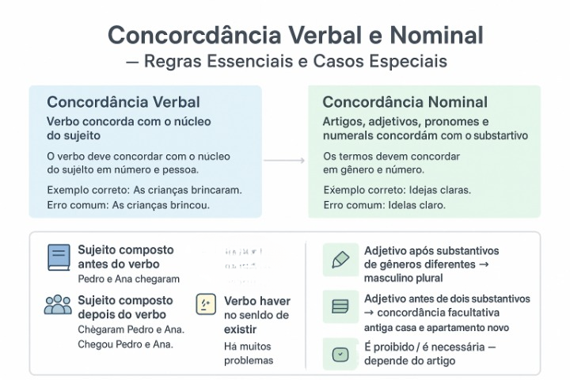

Concordância Verbal e Nominal: regras e casos especiais
Entendendo como funcionam as regras de concordância
A concordância verbal e nominal é fundamental para escrever frases claras, bem estruturadas e de acordo com a norma-padrão. Dominar essas regras ajuda a evitar erros comuns e aumenta a precisão da comunicação.
A seguir, você encontrará uma explicação ampla e didática sobre concordância verbal e concordância nominal, acompanhada de exemplos práticos e um quiz interativo para testar seus conhecimentos.
O que é concordância verbal
A concordância verbal determina que o verbo deve concordar com o sujeito em número e pessoa. A regra principal afirma que o verbo sempre acompanha o núcleo do sujeito.
Exemplo correto: Os alunos chegaram cedo.
Erro comum: Os alunos chegou cedo.
Casos especiais de concordância verbal
1. Sujeito composto antes do verbo: verbo no plural.
Pedro e Ana chegaram.
2. Sujeito composto depois do verbo: verbo pode ir para o plural ou concordar com o núcleo mais próximo.
Chegaram Pedro e Ana.
Chegou Pedro e Ana.
3. Verbo “haver” com sentido de existir: permanece no singular.
Há muitas pessoas na sala.
4. Verbos impessoais (haver, fazer indicando tempo, fenômenos naturais): ficam no singular.
Faz dois anos que viajamos.
5. Coletivos: verbo geralmente no singular, mas pode ir ao plural quando especificado.
A multidão de fãs aplaudiu / aplaudiram.
O que é concordância nominal
A concordância nominal é a relação entre artigos, adjetivos, pronomes e numerais com o substantivo ao qual se referem. Eles devem manter harmonia em gênero e número.
Exemplo correto: As propostas interessantes foram aprovadas.
Erro comum: As propostas interessante foram aprovadas.
Casos especiais de concordância nominal
1. Substantivos de gêneros diferentes seguidos de adjetivo: adjetivo vai para o masculino plural.
Camisa e sapato novos.
2. Adjetivo anteposto pode concordar apenas com o termo mais próximo:
Antiga casa e apartamento novo.
3. Expressões como “é necessário”, “é proibido”, “é bom”:
— Sem artigo: ficam no masculino singular (invariáveis).
É proibido entrar.
— Com artigo: concordam.
É proibida a entrada.
4. Palavras variáveis e invariáveis:
Meio como advérbio é invariável: Ela está meio cansada.
Bastante varia quando pronome/adjetivo: pessoas bastantes, mas é invariável como advérbio.
Concordância geral em frases
Veja alguns exemplos que combinam concordância verbal e nominal:
Os participantes ficaram satisfeitos com o evento.
A maioria dos alunos chegou cedo.
É necessária a presença de todos.
Faz dez dias que não estudo.
Quiz — Concordância Verbal e Nominal
Questão 1 — Assinale a frase com concordância verbal correta:
A) A maioria dos alunos chegaram atrasados.
B) A maioria dos alunos chegou atrasada.
C) A maioria dos alunos chegaram atrasado.
D) A maioria dos alunos chegou atrasados.
Qual está correta?
Questão 2 — Em qual frase o verbo impessoal foi usado corretamente?
A) Fazem dois meses que estudo.
B) Faz dois meses que estudo.
Questão 3 — Assinale a frase com concordância nominal correta:
A) As explicações claro ajudaram bastante.
B) As explicações claras ajudaram bastante.
C) As explicações clara ajudaram bastante.
Questão 4 — Qual frase está correta quanto ao uso do “se”?
A) Precisa-se de voluntários.
B) Procuram-se ajuda.
Questão 5 — Assinale a alternativa correta:
A) Os meninos estavam meios cansados.
B) Os meninos estavam meio cansados.
C) Os menino estavam meio cansado.
Explore Outros Conteúdos
Continue seus estudos acessando outras seções do site Mestre Kira: